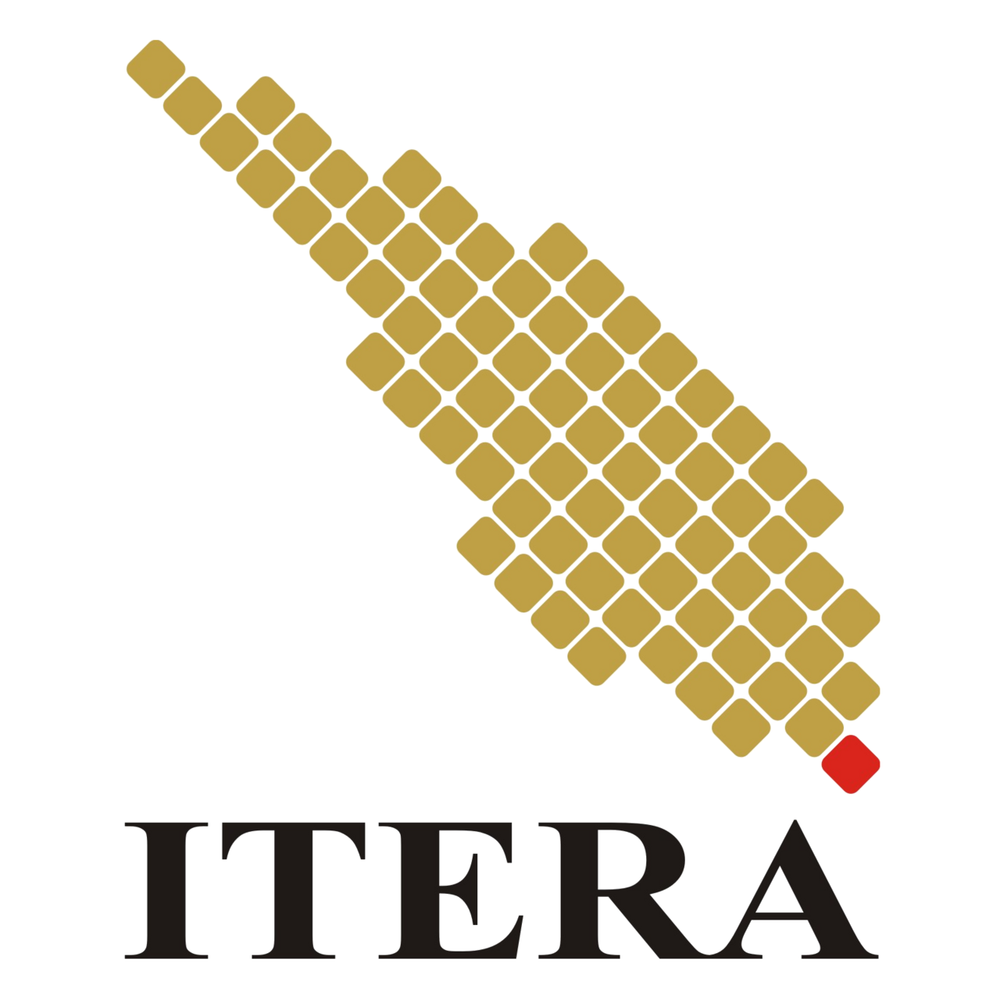

ITERA

Institut Teknologi Sumatera
S1 – Sains Data
2021 – 2026IPK: 2.95/4.00
Menyelesaikan mata kuliah yang relevan di bidang Sains Data, seperti Statistika, Pemrograman, Analisis Data, Data Mining, Visualisasi Data, Pembelajaran Mesin (Machine Learning), dan Analisis Deret Waktu (Time Series Analysis). Menghasilkan Tugas Akhir berjudul: Prediksi Rata-Rata Temperatur Terhadap Kelembapan Menggunakan Metode ARIMAX.